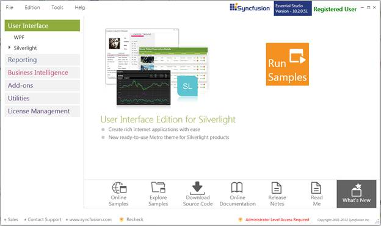
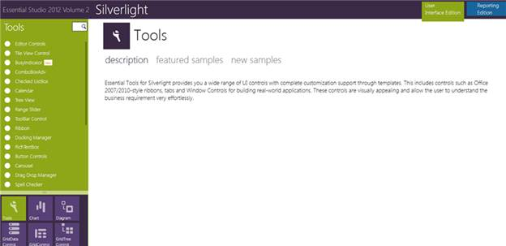
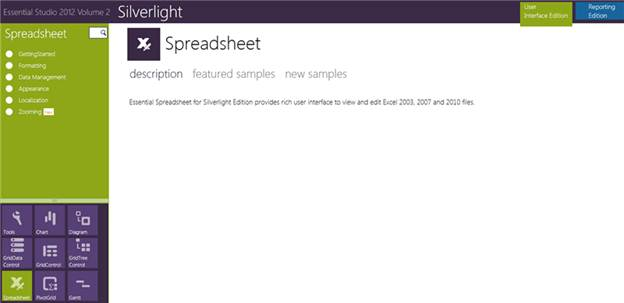

This section covers the location of the installed samples and describes the procedure to run the samples through the sample browser and online. It also lists the location of utilities, assemblies and source code.
Sample Installation Location
The Essential Spreadsheet for Silverlight samples are installed in the following location, locally on the disk:
...\My Documents\Syncfusion\EssentialStudio\<Version Number>\Silverlight\Spreadsheet.Silverlight\Samples\3.5
Viewing Samples
Follow the steps to view the samples:
1. Click Start > All Programs > Syncfusion > Essential Studio <version number> > Dashboard. The Syncfusion Essential Studio Dashboard <version number> window is displayed.

Figure 1: Syncfusion Essential Studio Dashboard
2. In the Dashboard window, click Run Samples for Silverlight under User Interface Edition panel. The Silverlight Sample Browser window is displayed.
 Note: You can view the samples in any of the
following three ways:
Note: You can view the samples in any of the
following three ways:
Run Samples - Click to view the locally installed samples.
Run Online Samples - Click to view online samples.
Explore Samples - Explore Silverlight samples on disk.
3. Tools samples are displayed by default.

Figure 2: Default Silverlight Sample
4. Select Spreadsheet. The spreadsheet samples are displayed.

Figure 3: Spreadsheet Sample
Source Code Location
The default location of the Essential Spreadsheet for Silverlight source code is:
[System Drive]:\Program Files\Syncfusion\Essential Studio\<Version Number>\Silverlight\Spreadsheet.Silverlight\Src